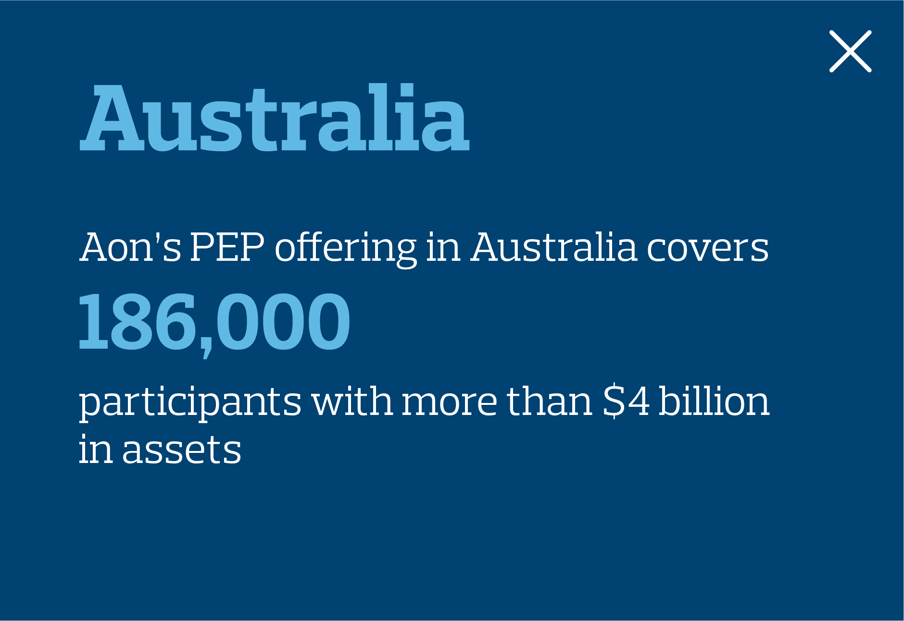
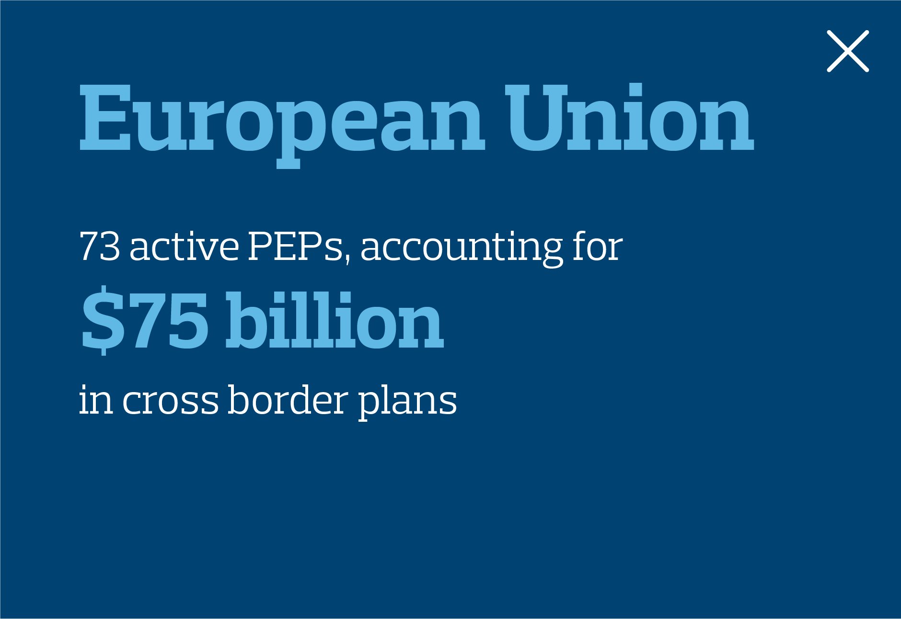
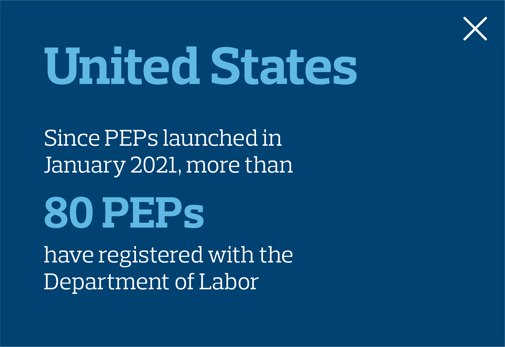

PEPs
Are Here
New 401(k) options for employers launched in early 2021. Here’s how busy HR managers and executives can get an edge by understanding their value.
For the past several years, pooled employer plans, or PEPs, have been gaining momentum from global trends. These next-generation, defined contribution retirement plans allow employers to band together instead of going it alone. Doing this means less work, less risk, and lower costs
for employers. Employees, too, are reaping the benefits; since they may pay less in fees, they are able to have more assets in retirement and can receive better support. This leads to improved participant behaviors, which sets employees up for better retirement outcomes.
Now, thanks to new U.S. legislation, American employers are able to join PEPs. These new cost-saving retirement options could not have arrived at a better time as the pandemic and resulting economic crisis have caused some employers to focus on essential work activities and have hindered workers’ financial wellbeing. Nearly three in 10 Americans decreased or stopped saving for retirement during the pandemic, according to a recent survey – on top of Aon research that had already found only one in three U.S. workers will save enough to retire comfortably by age 67.
1
2
Globally, more employers are moving to pooled retirement savings plans
Select highlighted countries to learn more





United States
SECURE Act allows
Pooled Employer Plans starting 2021
Aon launched the Aon PEP effective 1/1/2021
United Kingdom
Master Trusts are
the fasting-growing market.
3
Aon launched
Master Trust solution in 2016
European Union
$75B in cross border plans covering DB and DC
4
73 active plans (53% DB, 33% DC, 14% DB/DC)
4
Australia
Multiple Employer Plans dominate the market
Aon smartMonday solution covers 186,000 participants with over
$4B in assets
5
With this backdrop, PEPs have the potential to shake up the retirement landscape the way
401(k)s did when they arrived on the scene in 1978. Already more than 100 PEPs have registered with the Department of Labor. And while it’s early days for American PEPs, looking to the past may provide a clue for how they could grow going forward. When large companies like Pepsi,
JC Penney, and Johnson & Johnson adopted 401(k)s in the early 1980s, the floodgates opened. Similarly, Aon predicts more than half of U.S. employers will be using PEPs by 2030.
As organizations begin to assess which PEP may work for their organization, it’s important to keep in mind that not all PEPs are created equal. Many in the first wave are specialized, focusing on supporting the current investment advisor with a focus on small companies looking to leverage the scale of a pooled plan. Others have a broader mandate to bring the large company experience and benefits to small and mid-size companies. Below are some of the benefits to consider as you navigate this new retirement landscape.
Less Work for HR Teams
With traditional 401(k)s, benefits managers have to function as the quarterback between record keepers, auditors, legal compliance teams, investment teams, and many others. With PEPs, the process is much simpler.
After specifying the plan design and contribution levels, which can happen in a few weeks aided by a conversion team, the HR professional’s job is simply to monitor the plan. The Pooled Plan Provider of a PEP serves as the fiduciary to support the administrative, investment, compliance, consulting, and legal requirements of running the plan.
Some PEPs like Aon’s also provide pre-built communications, financial wellbeing support, and training materials such as videos and emails, so HR professionals have tools to bring employees up to speed quickly. These advantages can be obtained without having to sacrifice the current plan design either. By potentially decreasing the work to manage these retirement plans, HR employees are freed up to focus more on their organization’s mission-critical activities.
6
Less Risk for Employers
One of the biggest advantages of a PEP is being able to transfer the fiduciary responsibility and liability for investments and administration to a third party. That’s become all the more important in recent years as the risk of litigation with existing defined contribution plans has soared. In 2020 alone, there was a four-fold increase in excessive-fee lawsuits compared to three years ago, and in the last decade, more than $1 billion in settlements has been paid.
The risk is anticipated to drop dramatically with PEPs because Pooled Plan Providers take on fiduciary responsibility and liability. PEPs offered by large companies like Aon also draw on their experience with retirement solutions and mitigating risk for organizations all the way from Fortune 500 companies to smaller and regional organizations. A PEP can be right for any sized organization that is looking to transfer and reduce risk.
By 2030, Aon predicts more than half of
US employers will use a PEP
Click to toggle
Lower costs …
Less risk ...
Less work …
48%
Average savings for an employer using a PEP vs a single-employer 401 (k) plan
Lower costs …
Less risk ...
Less work …
In 2020, there was a
4x increase
in defined contribution plan excessive fee lawsuits
Lower costs …
Less risk ...
Less work …
With simplified (and outsourced) plan administration through a PEP, HR departments can
free up time
to devote to more pressing strategic initiatives while potentially reducing the risks of providing retirement benefits.
Lower Costs, More Services
The secret to the cost savings for PEPs is economies of scale. Scale enables PEPs to provide lower fees than standalone 401(k) plans to employers for everything from recordkeeping to investment fees. Based on a survey of over 100 employers as of March 2021, the Aon PEP provides an average cost savings of 44% relative to current 401(k) costs across plans of all sizes. Lower fees, in turn, create more retirement savings and better outcomes for employees.
Aon, for example, leverages its existing expertise in retirement and investment solutions and brought in partners like Voya Financial, the fourth leading record keeper in the U.S., to collaborate on innovative solutions expected by the largest of employers. Then by allowing small and mid-size companies the ability to join the plan, it provides tools and scale they couldn’t access before. The Aon PEP also works particularly well for specific situations like M&A, with a “pre-built” solution providing the flexibility to handle multiple situations and employers.
Another benefit of scale is that PEPs can offer tools that smaller sponsors could not offer on their own, such as services to help participants manage their student loans or coordinate their retirement plans with health savings accounts.
7
The PEP Transition
A typical change to a pooled employer plan will take about four months. Here’s how it’s handled.
Month 1
Month 2–3
Month 4
Month 1
Aon’s team begins the intake process by reviewing previous records, selecting plan designs and drafting plan amendments and adoption agreements.
Month 2–3
Month 2–3
The implementation begins with a handoff of fiduciary and compliance requirements and setting up record keeping with Voya Financial.
Month 4
Month 4
Employers communicate plan features to employees and launch micro-sites where participants can elect their investments.

PEPs will significantly impact the retirement landscape, and employers and employees can reap the benefits. Learn more to find out if a PEP is the right approach for your organization.
CNBC, Americans are raiding retirement savings during coronavirus pandemic.
Aon, Mind the Gap: Only 1 In 3 U.S. Workers Are Prepared for Retirement.
Broadridge Navigator
As of December 31, 2019.
As of June 30, 2020.
Aon FSG tracking of DC plan excess fee lawsuits and January 2021 Client Alert.
RPA Convergence, Largest DC record keepers.
UK Defined Contribution and Retirement Income 2019.
1
2
3
4
5
6
7
This site contains information that has been created, published, maintained or otherwise posted by institutions or organizations independent of AIUSA.
AIUSA does not endorse, approve, certify or control these websites and does not assume responsibility for the accuracy, completeness or timeliness of the information located there.
The opinions referenced are as of the date of publication and are subject to change due to changes in the market or economic conditions and may not necessarily come to pass. Information contained herein is for informational purposes only and should not be considered investment advice. Investment advice and consulting services provided by Aon Investments USA Inc. (Aon Investments). The information contained herein is given as of the date hereof and does not purport to give information as of any other date. The delivery at any time shall not, under any circumstances, create any implication that there has been a change in the information set forth herein since the date hereof or any obligation to update or provide amendments hereto.
This document is not intended to provide, and shall not be relied upon for, accounting, legal or tax advice or investment recommendations. Any accounting, legal, or taxation position described in this presentation is a general statement and shall only be used as a guide. It does not constitute accounting, legal, and tax advice and is based on Aon Investments' understanding of current laws and interpretation.
This document is intended for general information purposes only and should not be construed as advice or opinions on any specific facts or circumstances.
The comments in this summary are based upon Aon Investments' preliminary analysis of publicly available information. The content of this document is made available on an “as is” basis, without warranty of any kind. Aon Investments disclaims any legal liability to any person or organization for loss or damage caused by or resulting from any reliance placed on that content. Aon Investments reserves all rights to the content of this document. No part of this document may be reproduced, stored, or transmitted by any means without the express written consent of Aon Investments.
Aon Investments USA Inc. is a federally registered investment advisor with the U.S. Securities and Exchange Commission. Aon Investments is also registered with the Commodity Futures Trading Commission as a commodity pool operator and a commodity trading advisor, and is a member of the National Futures Association. The Aon Investments ADV Form Part 2A disclosure statement is available upon written request to:
Aon Investments USA Inc.
200 E. Randolph Street, Suite 700
Chicago, IL 60601 ATTN: Aon Investments Compliance Officer
© Aon plc 2021. All rights reserved
Back to top